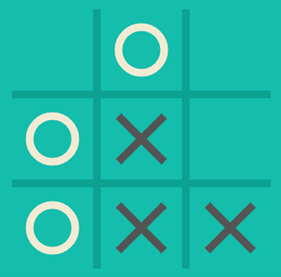
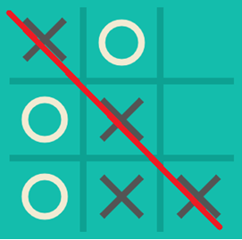

Tic-Tac-Toe is a two-person game, played on a 3X3 board. The objective of the game is to complete a sequence of identical symbols, while at the same time blocking the opponent from doing so. Such sequence can be a row, a line or a diagonal.

Figure 1 – An example of a Tic-Tac-Toe board mid-game
How to play?
The first person to start the game can choose between ✖ or ⭘. In the example below, the first player chooses ✖.
The first player marks any of the nine slots with ✖.
Their opponent will be assigned the
⭘ symbol.
Once the second player marks their slot, it’s the first player’s turn to mark the next free slot.
Remember! The goal is to be the first to complete a line, a row, or a diagonal of the same symbol.
Each player will mark their next slot, trying to block their opponent’s sequence and to complete their own.
For each turn, try and see a pattern in the other player’s marked slots. Block your opponent by selecting the slot that would have helped them complete their sequence.
If the other player fails to block you, mark your next slot to complete your sequence.

Figure 2 – X wins the game with a diagonal sequence
If the other player blocked you, select a slot that would lead to a different sequence.
The game is completed when either of the players manages to complete a sequence, or after reaching a stalemate where no sequences can be completed.